Service Operations Dashboard
A comprehensive system for tracking workshop efficiency and business performance.
1. System Entry

Gateway Portal
Serving as the central hub for the entire management system, this main entry page allows users to choose between viewing sales operations or service data.
2. Shop Floor Vehicle Status
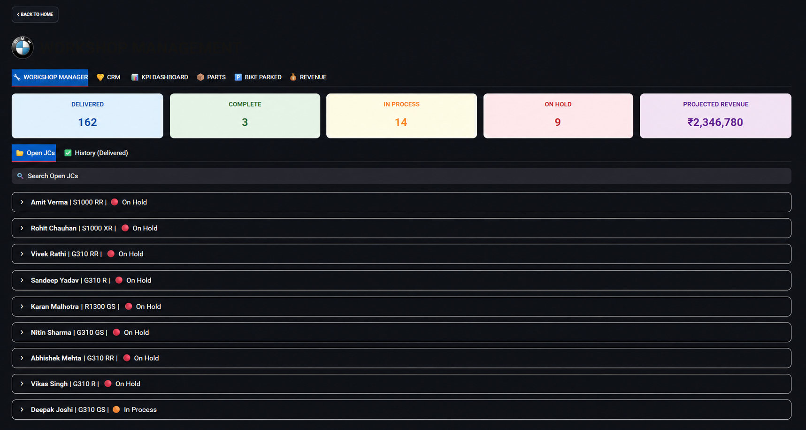
Live Vehicle Tracking
This workshop management page displays the details and real-time status of all active job cards, indicating whether a bike is currently in progress, completed, or on hold. Additionally, summary tiles at the top provide an overview of the total number of delivered bikes and the current stage distribution of vehicles in the workshop.
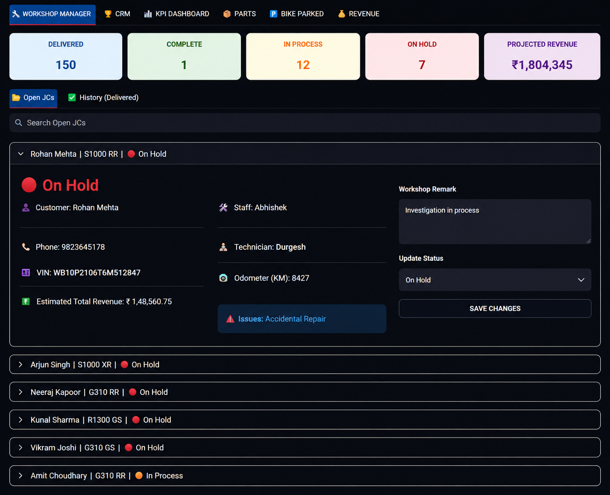
Vehicle Detail/h4>
Clicking on any vehicle in the list provides comprehensive details about the bike, including the VIN, customer contact information, required repair work, assigned service advisor and technician, mileage (KMs), and estimated revenue generation. Some of this data is populated by the advisor during job card creation, while the rest is synced automatically from the backend via the DMS. Additionally, the interface includes options to update the vehicle status and add workshop remarks to track progress, outline next steps, or document hold reasons
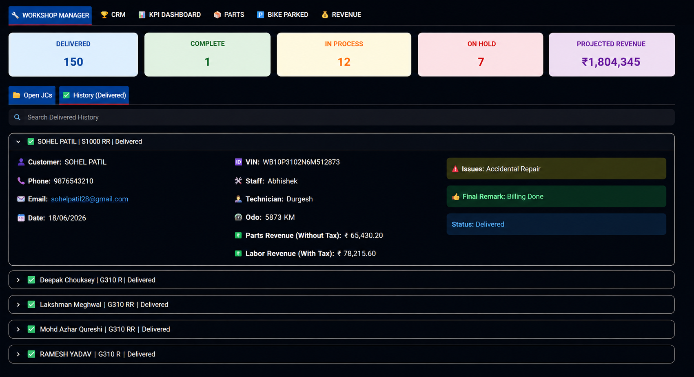
Delivered Bikes Detail
This tab within the workshop manager displays details for all bikes marked as delivered, mirroring the previous view while additionally showcasing the exact parts and labor revenue generated by each vehicle. This financial data is extracted from the DMS post-billing and automatically fetched in the backend via Google Sheets integration.
3. CRM Portal

Service appointment Overview
This CRM page tab allows Customer Relationship Executives to manage service appointments. CREs book appointments by filling out a Google Form, which instantly reflects here. Additionally, once a bike's service is completed, clicking on the customer's name seamlessly marks the vehicle status as 'reported to dealership.
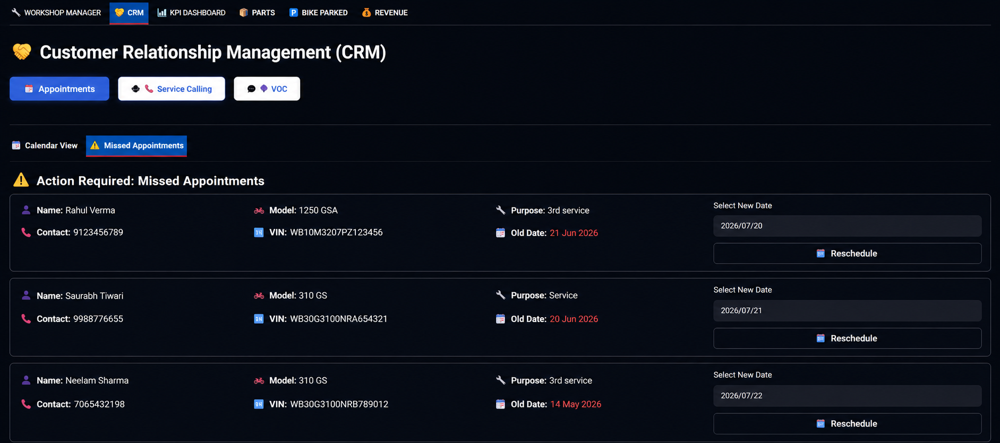
Missed Appointments Follow-up Logs
This tab enables CREs to follow up on missed appointments where customers failed to arrive on their scheduled date. It provides a simple interface to reschedule bookings directly by updating the appointment date.
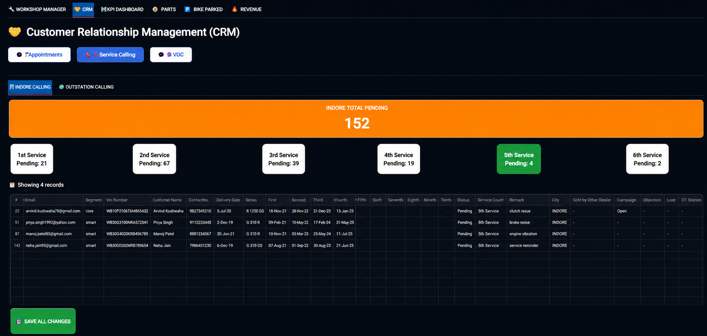
Service Caling Page
This main service calling tab displays all vehicles with upcoming or due services. It enables CREs to filter and contact local (Indore) or outstation customers to schedule service appointments. The interface is categorized by pending service intervals (such as 1st service, 4th service, etc.), allowing targeted outreach. Additionally, CREs can directly record customer responses and remarks, which automatically update the backend database.
4. Performance Dashboards
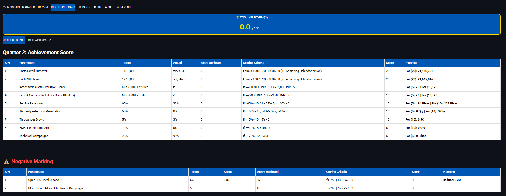
Real-time KPI Tracking
This KPI dashboard tab displays key performance indicators and targets, calculating the exact additional business required to meet goals. It also tracks target-based achievement points on a daily basis, providing a clear overview that simplifies target execution and monitoring.
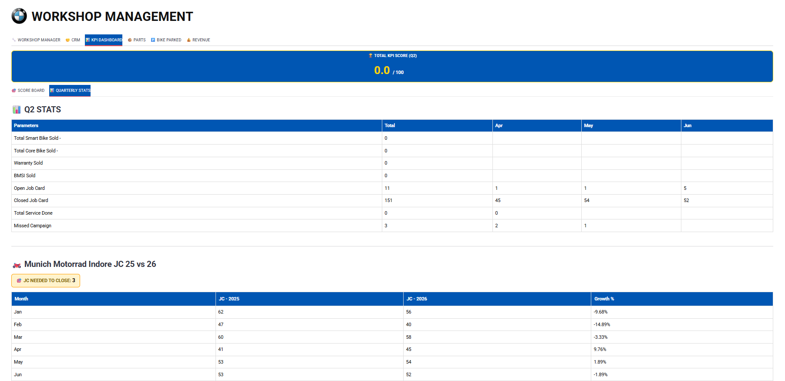
Quatarly Stats
This tab helps track essential operational statistics such as bike sales, extended warranties (EW) sold, and the count of open and closed job cards. Additionally, it displays workshop throughput metrics and provides a year-over-year performance comparison against last year.
5. Parts & Inventory
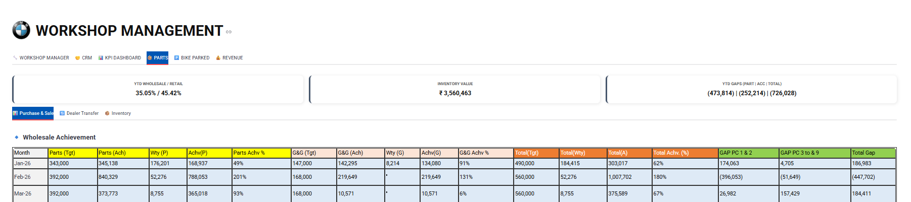
Puchase & Retail
This page provides comprehensive insights into spare parts inventory, covering related purchase and retail data. It details monthly part purchases, sales volumes, and warranty processing metrics in a single view.
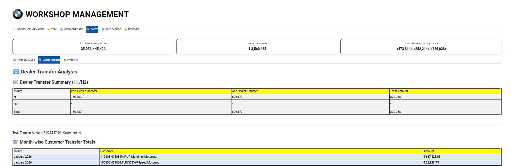
Dealer-to-Dealer Transfer
This tab displays comprehensive details regarding dealer-to-dealer transfers.
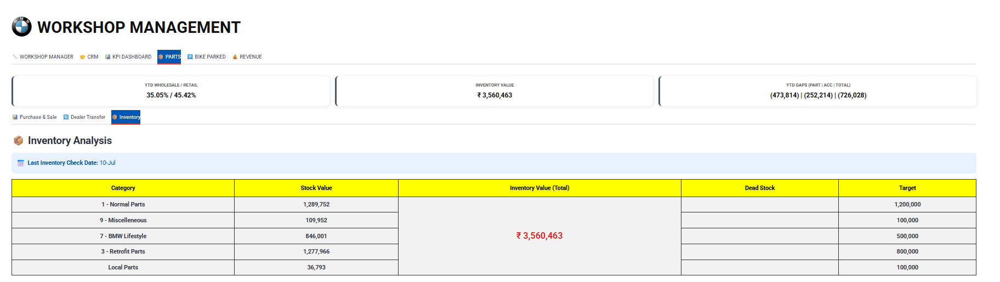
Inventory
Designed for stock management, this page offers categorized insights into spare parts inventory.
6. Bike Parked Bifurcation
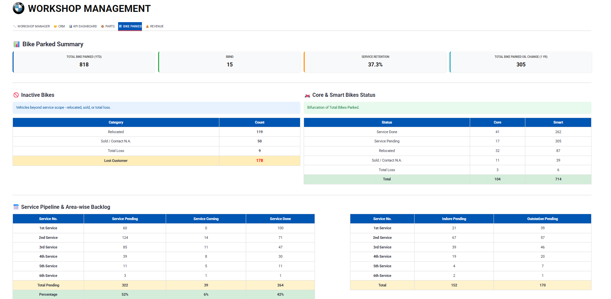
Sold FLeet Info
This park/vehicle inventory page provides a comprehensive breakdown of all sold motorcycles. It categorizes bikes into lower and upper segments, tracks service retention status (active vs. discontinued customers), monitors completed versus pending services, and splits the data by local (Indore) and outstation locations.
7. Sales & Revenue Analysis
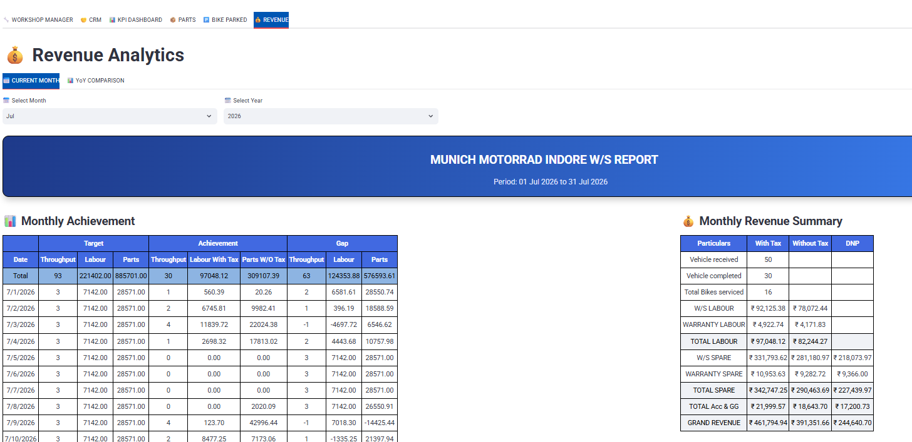
Daily Revenue Overview
This revenue page tab displays daily revenue metrics for the current month. It also features month and year selection filters at the top, allowing users to view revenue data for any historical period.
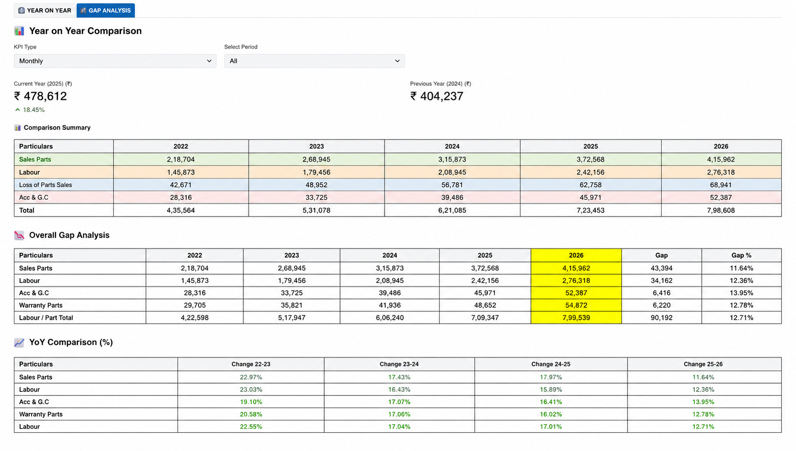
Financial Performance Insights
This tab compares the current year's revenue against past years, providing insights into projected target achievement timelines and the required business volume. It includes interactive selectors to analyze performance across monthly, quarterly, half-yearly, and annual intervals.